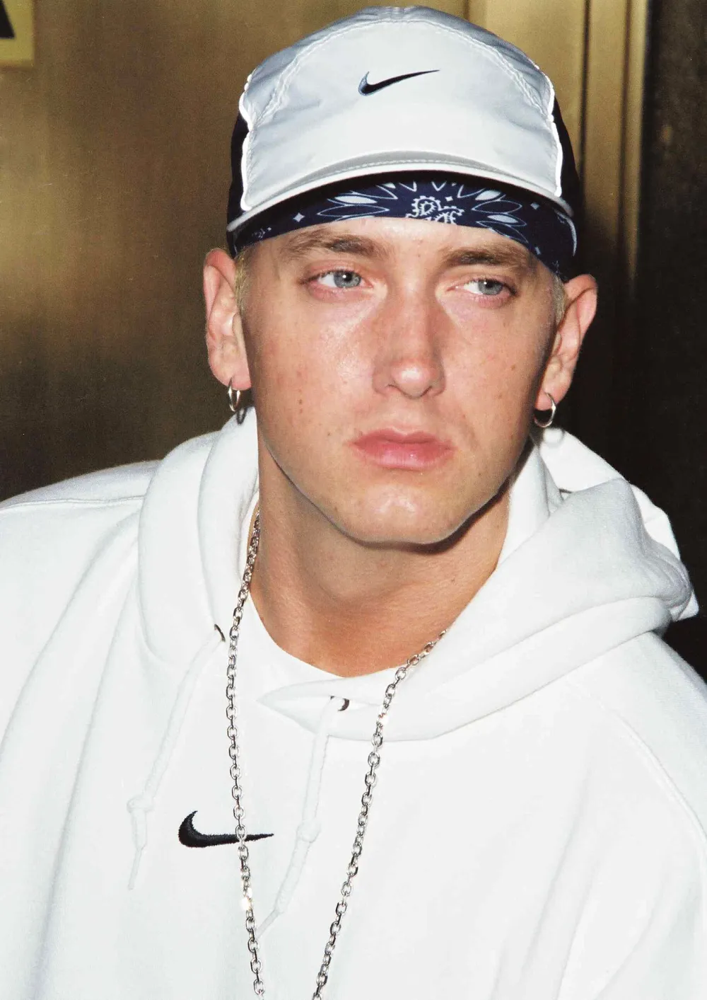

Маршалл Брюс Мазерс III (народився 17 жовтня 1972 року), відомий як Емінем, - американський репер. Йому приписують популяризацію хіп-хопу в Середній Америці, і його часто вважають одним з найвидатніших реперів усіх часів. Глобальний успіх Емінема та його відомі твори широко розглядаються як такі, що зруйнували расові бар'єри для прийняття білих реперів у популярній музиці. Хоча значна частина його трансгресивної творчості наприкінці 1990-х - на початку 2000-х років зробила його суперечливою фігурою, він став уособленням популярного гніву американського андеркласу, і його вплив на багатьох артистів, що працюють у різних жанрах, згадують як такий, що вплинув на них. Після випуску свого дебютного альбому Infinite (1996) та розширеного міні-альбому Slim Shady EP (1997) Емінем підписав контракт з Aftermath Entertainment доктора Дре і згодом досягнув популярності в мейнстрімі у 1999 році з альбомом The Slim Shady LP. Його наступні два релізи, The Marshall Mathers LP (2000) та The Eminem Show (2002), мали світовий успіх і обидва були номіновані на премію Греммі в категорії "Альбом року". Після виходу наступного альбому, Encore (2004), Емінем взяв перерву у 2005 році, в основному через залежність від ліків, що відпускаються за рецептом. Він повернувся в музичну індустрію через чотири роки, випустивши Relapse (2009) і Recovery, який вийшов наступного року. Recovery став бестселером у всьому світі 2010 року, що зробило його другим альбомом Емінема, після The Eminem Show 2002 року, який став найбільш продаваним альбомом року в усьому світі. У наступні роки він випустив альбоми номер один у США The Marshall Mathers LP 2 (2013), Revival (2017), Kamikaze (2018) та Music to Be Murdered By (2020).
Серед пісень Емінема - "My Name Is", "The Real Slim Shady", "The Way I Am", "Stan", "Without Me", "Lose Yourself", "Mockingbird", "Not Afraid", "Love the Way You Lie", "Rap God", "The Monster", "River" і "Godzilla". Окрім сольної кар'єри, Емінем був учасником хіп-хоп гурту D12. Він також відомий своєю співпрацею з детройтським репером Ройсом да 5'9"; вони разом відомі як Bad Meets Evil. Емінем зіграв головну роль у музично-драматичному фільмі "8 миля" 2002 року, зігравши театралізовану версію самого себе. "Lose Yourself", трек з саундтреку до фільму, очолював Billboard Hot 100 протягом 12 тижнів, що є найбільшим терміном для сольної реп-пісні, і отримав премію "Оскар" за найкращу оригінальну пісню, що зробило Емінема першим хіп-хоп виконавцем, який отримав цю нагороду[5]. Він знявся в епізодичних ролях у фільмах "Мийка" (2001), "Смішні люди" (2009) та "Інтерв'ю" (2014), а також у телевізійному серіалі "Антураж" (2010). Емінем розвивав інші підприємства, включаючи Shady Records, спільне підприємство з менеджером Полом Розенбергом, яке допомогло запустити кар'єру таких артистів, як 50 Cent, D12 та Обі Трайс, серед інших. Він також заснував власний канал Shade 45 на радіо Sirius XM. Емінем є одним з найбільш продаваних музичних виконавців усіх часів, з оціночними світовими продажами понад 220 мільйонів записів. Він був найбільш продаваним музичним виконавцем у Сполучених Штатах 2000-х років і найбільш продаваним чоловічим музичним виконавцем у Сполучених Штатах 2010-х років, посівши третє місце в загальному рейтингу. Billboard назвав його "Артистом десятиліття (2000-2009)". Він мав десять перших альбомів у чарті Billboard 200 - всі вони послідовно дебютували на першому місці чарту, що робить його першим артистом, який досяг цього - і п'ять перших синглів у Billboard Hot 100. The Marshall Mathers LP, "The Eminem Show", "Curtain Call: Хіти (2005), "Lose Yourself", "Love the Way You Lie" та "Not Afraid" отримали діамантовий або вищий рівень сертифікації Американської асоціації звукозапису (RIAA). Журнал "Rolling Stone" включив його до списків "100 найвидатніших артистів усіх часів" та "100 найвидатніших авторів пісень усіх часів". Він отримав численні нагороди, зокрема 15 премій "Греммі", вісім американських музичних премій, 17 премій Billboard Music Awards, премію "Оскар", премію "Еммі" в прайм-тайм і премію MTV Europe Music Global Icon Award. У листопаді 2022 року Емінема було введено до Зали слави рок-н-ролу.
Маршалл Брюс Мазерс III народився 17 жовтня 1972 року в Сент-Джозефі, штат Міссурі, єдиною дитиною Маршалла Брюса Мазерса-молодшого та Дебори Рей "Деббі" (уродженої Нельсон). Він має шотландське, валлійське, англійське, черокі, німецьке, швейцарське, польське та, можливо, люксембурзьке походження. Його мати ледь не померла під час 73-годинних пологів з ним.Батьки Емінема були в гурті під назвою Daddy Warbucks, який грав у готелях Ramada Inns на кордоні Дакоти і Монтани, перш ніж вони розлучилися. Його батько покинув сім'ю, коли Емінему було півтора року, і він виховувався лише матір'ю Деббі в бідності. Пізніше у матері народився син Натан "Нейт" Кейн Самара. У віці дванадцяти років вони з матір'ю кілька разів переїжджали і жили в декількох містах штату Міссурі (в тому числі в Св. Джозефа, Саванну і Канзас-Сіті), перш ніж оселився в Уоррені, штат Мічиган, передмісті Детройта. Емінем часто сварився з матір'ю, яку соціальний працівник описував як "дуже підозрілу, майже параноїдальну особистість". Він писав листи батькові, але Деббі казала, що всі вони поверталися з позначкою "повернуто відправнику".